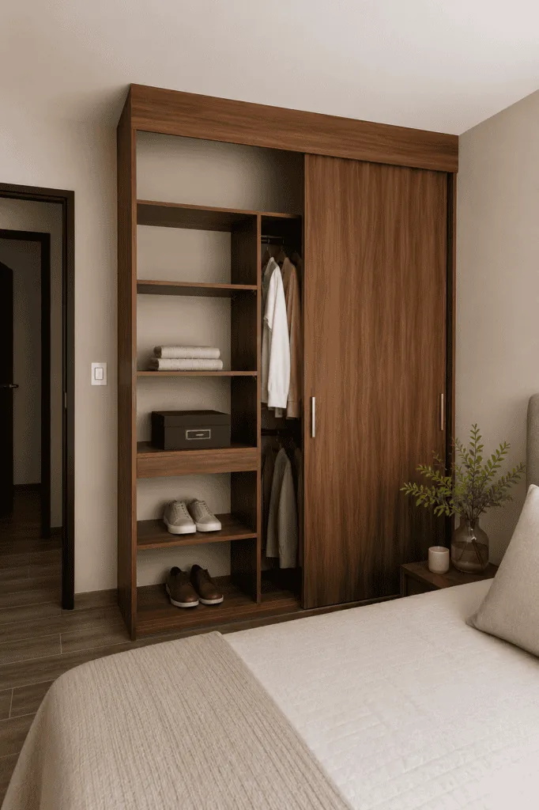
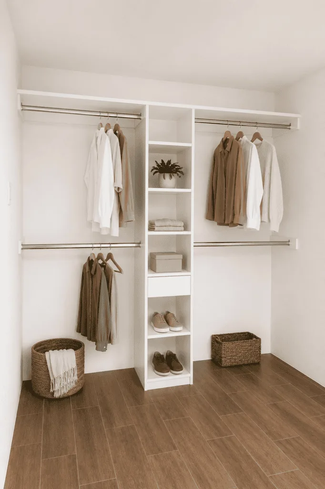
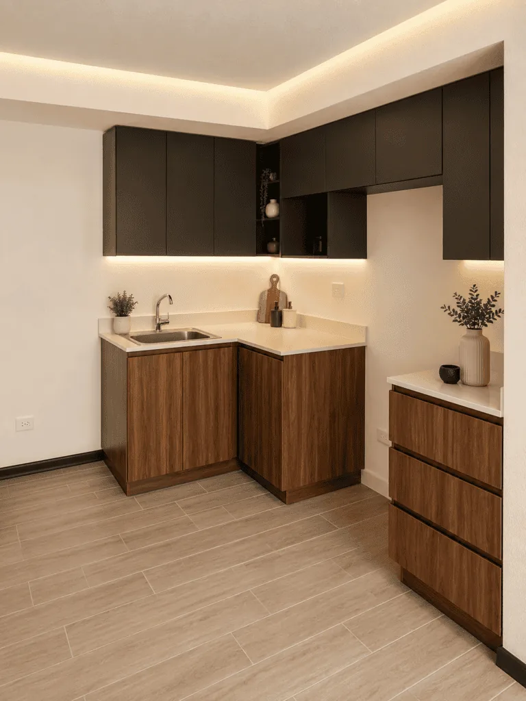

01
Referencia de catálogo
Clóset con puertas corredizas
Diseño publicado con puertas corredizas, sujeto a medidas del proyecto.

Imagen publicada por Geométrica GTClósets, cocinas y mobiliario a medida. Convierte una idea de espacio en un alcance que se pueda revisar.
Guarda tus referencias en una lista local y prepara el siguiente paso. Precios, variantes y existencias se revisan en cada ficha oficial.
Diseño publicado con puertas corredizas, sujeto a medidas del proyecto.

Propuesta de clóset con área de colgado y organización central.

Conjunto a medida con gabinetes altos, bajos y cubierta continua.
Presenta muebles a medida y restauración, con llamada a solicitar cotización y contacto comercial.
Prueba cantidades y condiciones. Obtén un resumen local para revisar antes de hablar con la empresa.
Datos revisados el 3 de noviembre de 2026. La empresa confirma cualquier condición vigente.
Diseño publicado con puertas corredizas, sujeto a medidas del proyecto.
Propuesta de clóset con área de colgado y organización central.
Conjunto a medida con gabinetes altos, bajos y cubierta continua.
La web presenta fabricación personalizada para diferentes ambientes.
El sitio publica restauración dentro de sus servicios.
El catálogo incluye cocina, dormitorio, baño y muebles de apoyo.
La página publica contacto en Ciudad de Guatemala.
La web invita a cotizar; medidas, materiales y alcance se revisan con su equipo.